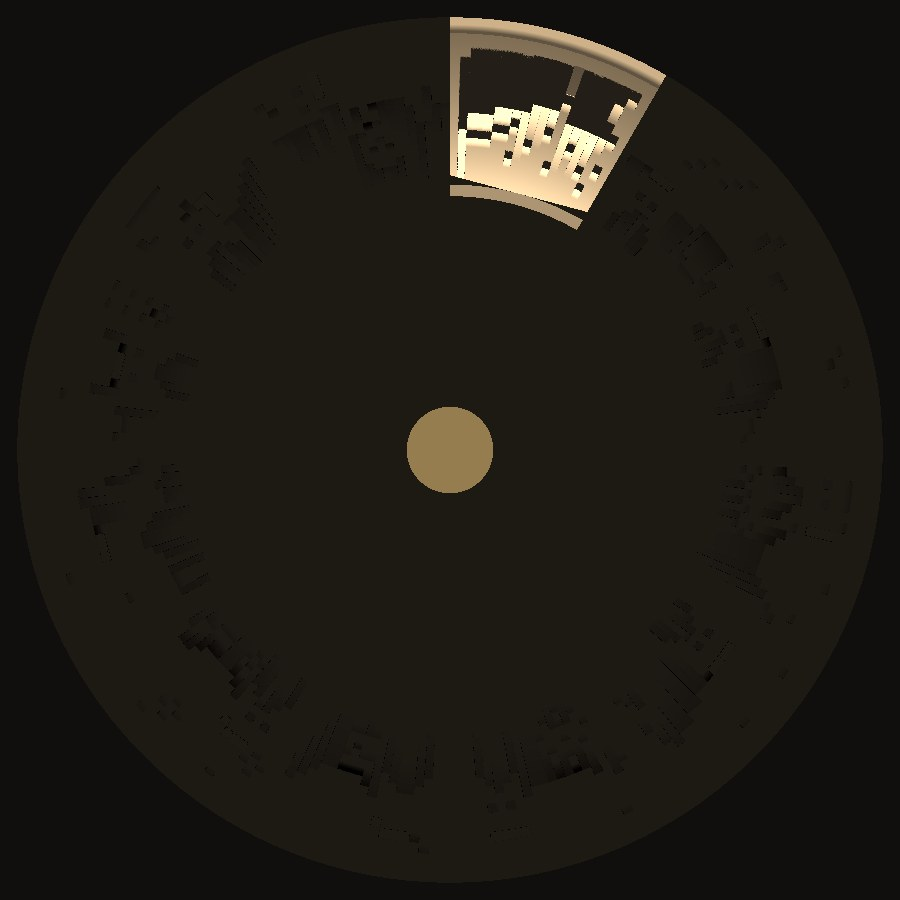
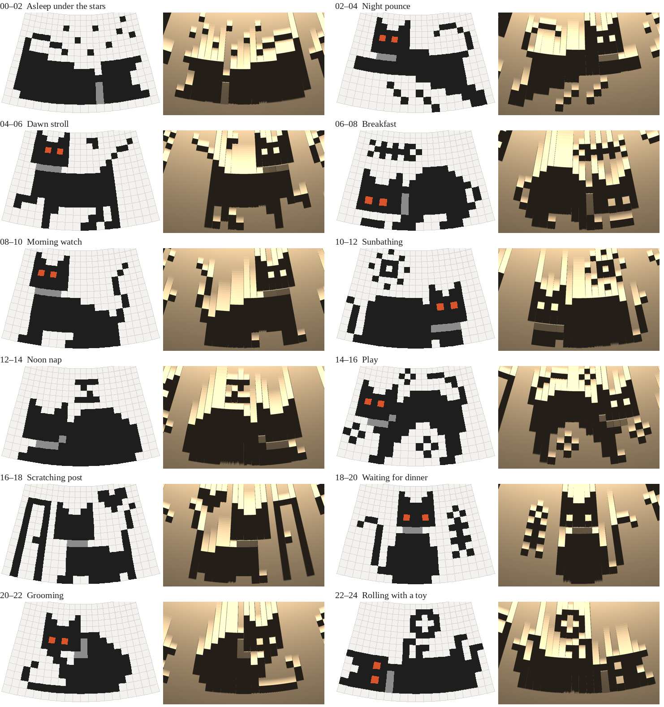

Before anything was carved, each sector was lit by a simulated lamp of real size and compared with its drawing.

7.1Method
A lamp of nine points, rays marched over the relief.
The 1.6 mm die is sampled at 3 × 3 points. From every 0.1 mm of the sector a ray is marched to each point over the height field; the visible fraction times Lambert's cosine gives the brightness, normalised to the open floor.
7.2What it caught
Four corrections before the drawings were final.
White cells enclosed by black are plain floor, not raised faces. Grey cells need black on the lamp side, or they are simply lit. Half-lit faces must tilt away from the lamp to read darker than the floor. Cells in the outermost wedges fall in the soft edge of the beam.
7.3Lamp height
From 30 to 20 mm: lower walls, same sharpness.
| H | Max wall | Edge shift per 0.1 mm | Brightness | Grey tilt |
|---|---|---|---|---|
| 30 mm | 9.6 mm | 0.7 mm | 1.00 | ≈ 6° |
| 20 mm | 6.4 mm | 1.1 mm | 0.48 | ≈ 4° |
| 15 mm | 4.8 mm | 1.4 mm | 0.27 | ≈ 3° |
Brightness is relative to H = 30 for a downward-facing LED at r = 120 mm. 20 mm was chosen for a lower head and a thinner board; a brighter LED makes up the light.
